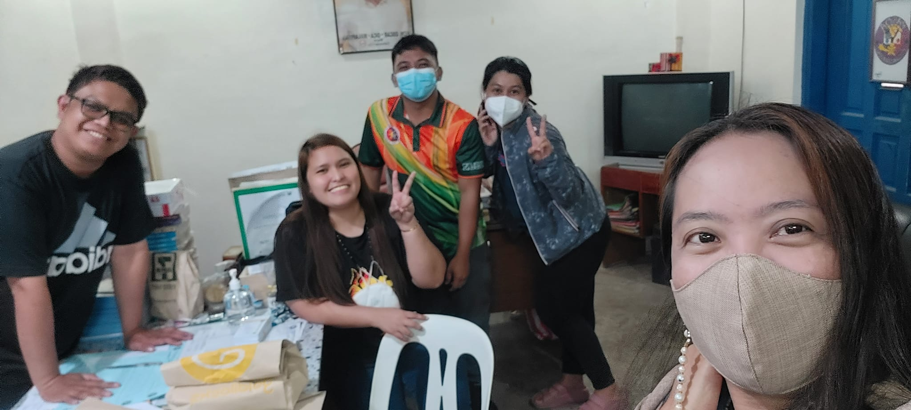
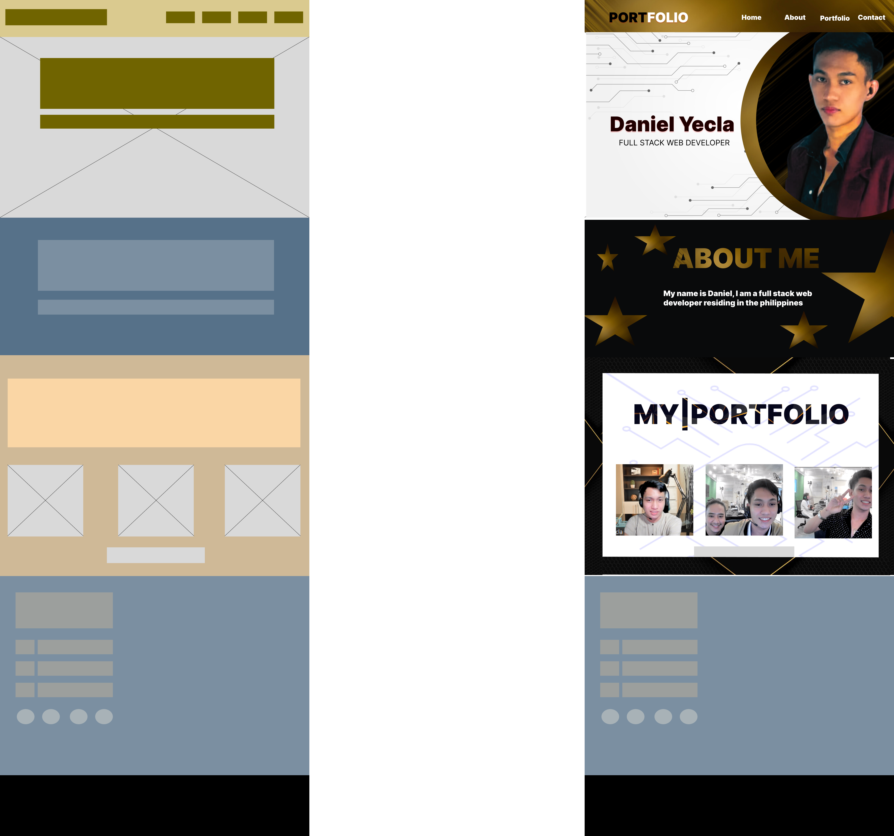

Court Stenographer
Salary Range: ₱24k-45k
What is Court Stenographer?
A stenographer is a person trained to type or write in shorthand methods, enabling them to write as
quickly as people speak. Stenographers can create lasting documentation of everything from court cases
to medical conversations. This is obviously useful in many legal settings, but the skill is also used
for live closed captioning on television or captioning for hard-of-hearing audiences at events.
Legal Secretary
Salary: ₱20,293
What is Legal Secretary?
Legal Secretaries file, scan and copy legal documents on a daily basis. They schedule
the hearings, meetings and court depositions for the Lawyers they work with. They make travel
arrangements for Lawyers and file documents with the court before the deadlines.
Medical Secretary
Salary: ₱17,707
What is Medical Secretary?
The Medical Secretary will perform secretarial duties using specific knowledge of medical terminology and
hospital, clinic, or laboratory procedures. Duties will include scheduling appointments, billing patients,
and compiling and recording medical charts, reports, and correspondence.
College Professor
Salary: ₱57k-67k

What is College Professor?
What is a college professor The answer will vary somewhat depending on the field of study that one focuses
on. There are college professors who teach literature, sciences, law, and a host of other topics. A college
professor is employed by a state or private college, university, or community college to teach students who
are enrolled in their classes.
Customer Service Representative
Salary: ₱16k-35k
What is Customer Service Representative?
A Customer Service Representative works with clients who have complaints, orders, or require information
about products/services purchased from the organization. They also provide solutions that fit those
individualized situations and prioritize the customers' needs at each step of the process.
Web Designer
Salary: ₱31360

What is Web Designer?
A Web Designer creates and oversees all visual aspects of websites. Web Designers plan, ideate, create, and build websites and web pages, many of which combine a number of visual elements including text, photos, graphics, and video clips. A Web Designer also oversees the design and layout, which can mean working on a brand new website or updating existing pages.
Before creating those designs, Web Designers focus on liaising with clients and stakeholders to develop a clear idea of the goals and needs of a website. They then begin creating websites, designs, and layouts that present a company in a positive way to a target audience.